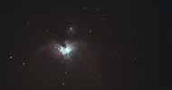
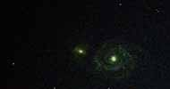

The north star is the key to finding other constalations and objects in the sky.
It can be found by following the side of Ursa Major the saucepan.
One of the most distinctive constalations in the night sky in the northern hemisphere is Ursa Major the Great Bear or the saucepan.